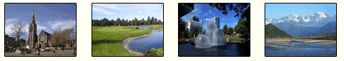

- Stableford is the closest B&B to the airport and ideal for arriving and departing visitors.
- We have a reasonable tariff.
- Stableford is a comfortable, clean, quiet and friendly home.
- The prestigious Russley Golf Course is next door to our home and is a two minute walk to the first tee.
Equipment can be hired. Click here to go to their website.
- On a fine day The Southern Alps are clearly visable from our lounge.
- The trees from the Russley Golf Course provide a scenic backdrop.
- We are only 20 minutes from the city centre via the airport bus at a cost of $3.50NZD.
- Antartic Centre nearby.
- There are a number of good restaurants nearby including some within easy walking distance.
- Off-street parking available.
Our B & B has not been affected by the earthquake. We are up and running with all facilities available.
